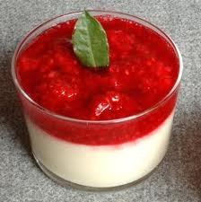

Panna cotta
Ingrédients
4×
- 3 feuilles de gélatine
- 60 cl de crème liquide
- 70 g de sucre en poudre
- 1 gousse de vanille
- 100 g de framboises

Préparation
Étape 1
Ramollir 3 feuilles de gélatine dans un bol d’eau froide.
Étape 2
Dans une casserole, verser 60 cl de crème liquide (ou moitié lait), 70 g de sucre en poudre et 1 gousse de vanille. Porter à ébullition en remuant, puis incorporer la gélatine essorée.
Étape 3
Verser dans des ramequins et laisser reposer 6h au réfrigérateur.
Étape 4
Démouler et napper d’un coulis de 100 g de framboises (ou fraises, ou caramel).
Conseils
Avec de l’agar-agar : remplacer la gélatine par 2g d’agar-agar dilué dans 1 cas de crème, ajouté avant l’ébullition.
Résumé
3 feuilles de gélatine
Ramollir
60 cl de crème liquide
70 g de sucre en poudre
1 gousse de vanille
Porter à ébullition incorporer
laisser reposer 6h
100 g de framboises
napper